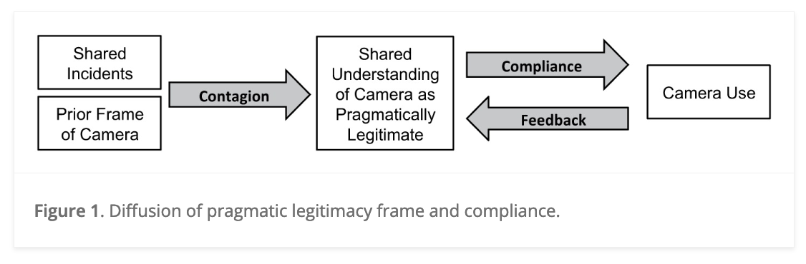
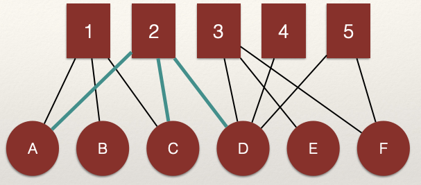
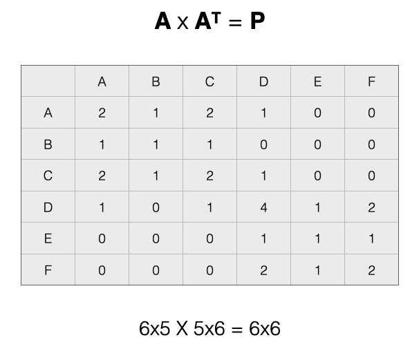

Chapter 11: Projection
Learning Goals
Understand projection of bipartite graphs to unipartite graphs.
Know the consequences of projecting bipartite graphs to unipartite graphs.
Motivating Question and Empirical Example
Let’s revisit an empirical question from the introduction to the course and that we reviewed in the chapter on bipartite graphs. Young & Ready (2015) examined two research questions:
- How do police officers “frame” body-worn cameras?
- Is the meaning officers attribute to cameras created and transmitted in groups?
To answer these questions, they proposed the following model:

In this model, the argued that police officers views of body-worn cameras influence whether they use their cameras in incidents. Where do these views come from? The authors proposed a contagion process whereby officers who shared incidents together exchanged views about the legitimacy of body-worn cameras.
Thus, the network matters!
The network Young & Ready (2015) analyzed is shown below:

In this network, incidents (white circles) connect officers (squares and triangles). This is a bipartite graph because there are two sets of nodes: incidents and officers. The plot shows two types of officers, those who were in the treatment condition of the study (i.e. they were assigned a body-worn camera) and those who were in the control condition (i.e. they did not receive a camera). The focus of the study was how exposure to body-cameras during incidents influenced views, especially for those who were not assigned a camera.
To examine influence in this network, the authors actually examined this network:

In this network, the nodes are police officers and the edges represent shared incidents. The width of the edges represents the number of shared incidents. That is, wider edges between two nodes mean that more incidents were shared between those nodes.
This network is the “weighted, unipartite projection” of the bipartite graph shown above. Where did this graph come from? It was created through a process called projection.
Introduction
As we saw in the chapter on bipartite graphs, networks with complex node sets can be represented using an adjacency matrix and analyzed in various ways. However, a common approach in research is to reduce a bipartite graph to a unipartite graph so as to use the tools developed for networks with a single set of nodes. Projection is the process by which we map the connectivity between modes to a single mode.
For example, let’s say we have a two-mode network of people (\(N\)) in groups (\(M\)). By projecting, we get either:
- A one-mode network of people connected to people by groups (an \(N \times N\) adjacency matrix) and/or
- A one-mode network of groups connected by people (an \(M \times M\) adjacency matrix).
We can see this graphically by taking a look at our example network from the chapter on bipartite graphs:

Consider nodes A, B, and C. Are the connected?

We can see that A, B, and C are connected through the shared edges with node 1. That is, the edges \(L_{A,1}\) and \(L_{B,1}\) connect nodes A and B. The same for edges \(L_{B,1}\) and \(L_{C,1}\) which connect nodes B and C.
What about node 2?

We can see that A, C, and D are connected through the shared edges with node 2. That is, the edges \(L_{A,2}\) and \(L_{C,2}\) connect nodes A and C and edges \(L_{C,2}\) and \(L_{D,2}\) connect nodes C and D.
These connections are what the projection to the \(N\) node set will render in the unpartite graph.
What about the \(M\) nodes?

We can see that 2, 3, 4, and 5 are connected through the shared edges with node D. That is, the edges \(L_{D,2}\) and \(L_{D,3}\) connect nodes 2 and 3 and edges \(L_{D,4}\) and \(L_{D,5}\) connect nodes 4 and 5.
Note that nodes in one node set can be connected through multiple nodes in the alternative node set. For example:

That is, the edges \(L_{D,3}\) and \(L_{D,5}\) connect nodes 3 and 5. But, nodes 3 and 5 are also connected by edges \(L_{F,3}\) and \(L_{F,5}\) (highlighted in the figure).
Building the Projection
In an influential paper by Ronald Breiger in 1974, he proved mathematically that we can build the adjacency matrix for each projected network through matrix algebra. Since the bipartite graph represents two nodes sets, we can create two unipartite graphs: a “people” network and a “group” network. The “people” network is the connections between the \(N\) nodes and the “group” network is the connections between the \(M\) ndoes.
Let’s make this more concrete. We create these projections by multiplying an adjacency matrix by it’s transpose. The transpose of a matrix simply reverses the columns and rows:
\[A^T_{ij} = A_{ji}\]
Here, the \(T\) in the superscript is used to indicate the transpose of the matrix \(A\). Note that all we do is switch the columns and rows.
A two-mode \(N \times M\) adjacency matrix, can be projected to:
- A \(M \times M\) matrix (ties among \(M\) nodes via \(N\)) and/or
- A \(N \times N\) matrix (ties among \(N\) nodes via \(M\))
Let’s take our example network above and look at this a bit closer:

Note that our matrix, \(A\), has 6 rows and 5 columns. This means it has order \(6 \times 5\).

Recall, that the transpose of a matrix simply reverses the columns and rows. To get the transpose, imagine rotating the matrix 90 degrees, and then flipping it over. That would give us this:
In the transpose, \(A^T\), the rows and columns have been switched. We now have 5 rows and 6 columns. This means it has order \(5 \times 6\).
So what?
We need to briefly review some rules about matrix multiplication to understand why the emphasis on order is important.
Matrix Multiplication Rules
To multiply two matrices, the number of columns in the first matrix must match the number of rows in the second matrix. For example:
- \(5 \times 6\) X \(6 \times 5\) works,
- but \(5 \times 6\) X \(5 \times 6\) does not work.
The rule is that the “inner numbers must match”, meaning that the two inside numbers (the number of columns in the first matrix and the number of rows in the second matrix) must be the same.
Product Matrix
When we multiply two matrices, we get the product matrix. The product matrix has the number of rows equal to the first matrix and the number of columns equal to the second matrix. For example: \(5 \times 6\) X \(6 \times 5\) = \(5 \times 5\).
The product matrix is the projected graph. Recall that there are two potential product matrices we can create:
- \(A \times A^T\) (what Breiger (1974) called the “people” matrix, \(P\)) and
- The \(A^T \times A\) (what Breiger (1974) called the “group” matrix \(G\))
What does each one represent?
To answer this question, let’s work on creating the projections!
“People” Matrix
To create the “people” matrix, \(P\), which connects nodes in the the set \(N\), we perform the following matrix multiplication for our adjacency matrix \(A\):
\[A \times A^T = P\] Let’s see how this works by visualizing our example:
After multiplication we get:

The product matrix as rows \(N \times N\) shows us how people are connected by groups.
The values of the matrix show two important things:
- The diagonal cells represents the count of ties that a specific node in \(N\) has with nodes in \(M\)
- The off-diagonal cells count the number of ways that separate nodes in \(N\) are connected by nodes in \(M\)
Let’s take a look at each of these points.
Diagonal Cells
The diagonal tells us the count of count of ties that a specific node in \(N\) has with nodes in \(M\). Using the language of “groups” to refer to the \(M\) node set, the diagonal is the count of groups to which a node in \(N\) is connected.
For example, in the figure below, D is in 4 groups:

We can see this in the graph by counting the edges, but also by looking at the \(P_{D,D}\) cell of the adjacency matrix \(P\) (highlighted in red).
Here is a question. What network measure does the diagonal give us? Think back to the chapter on bipartite graphs.
Off-Diagonal Cells
The off-diagonal cells count the number of ways that separate nodes in \(N\) are connected by nodes in \(M\). Using the language of “people” to refer to the \(N\) node set, the off-diagonal represents the count of other people to whom a node in \(N\) is connected.
For example, in the figure below, nodes A and B are linked through a single node, 1. This means the value for the \(P_{A,B}\) cell of the adjacency matrix \(P\) (highlighted in green) is 1.

Note that when we project, it forces the matrix to be symmetric about the diagonal. This means that the projection creates an undirected unipartite graph. As a result, the value for the \(P_{B,A}\) cell of the adjacency matrix \(P\) (also highlighted in green) is 1.
Let’s look at another example:
Here, A and C are linked through two nodes in \(M\), 1 and 2. This means that the value for the \(P_{A,C}\) cell of the adjacency matrix \(P\) (highlighted in green) is 2 and the value for the \(P_{C,A}\) cell is also 2 (also highlighted in green). Using the language of “groups” to refer to the \(M\) nodes, we can say that A and C are share membership in 2 groups.
Note, the off-diagonal cells represent counts of shared nodes in \(M\), not counts of edges. That is what the diagonal represents.
“Group” Matrix
To create the “group” matrix, \(G\), which connects nodes in the the set \(M\), we perform the following matrix multiplication for our adjacency matrix \(A\):
\[A^T \times A = G\] After multiplication we get:
The product matrix as rows \(M \times M\) shows us how groups are connected by people.
As with the product matrix \(P\), the values of the product matrix \(G\) shows two important things:
- The diagonal cells represents the count of ties that a specific node in \(M\) has with nodes in \(N\)
- The off-diagonal cells count the number of ways that separate nodes in \(M\) are connected by nodes in \(N\)
Let’s take a look at each of these points.
Diagonal Cells
The diagonal tells us the count of count of ties that a specific node in \(M\) has with nodes in \(N\). Using the language of “people” to refer to the \(N\) node set, the diagonal is the count of people to which a node in \(M\) is connected.
For example, in the figure below, 2 is in 3 groups:
We can see this in the graph by counting the edges, but also by looking at the \(G_{2,2}\) cell of the adjacency matrix \(G\) (highlighted in red).
Here is a question. What network measure does the diagonal give us? Think back to the chapter on bipartite graphs.
Off-Diagonal Cells
The off-diagonal cells count the number of ways that separate nodes in \(M\) are connected by nodes in \(N\). Using the language of “groups” to refer to the \(M\) node set, the off-diagonal represents the count of other groups to whom a node in \(M\) is connected.
For example, in the figure below, nodes 1 and 2 are linked through 2 nodes in \(M\), A and C. This means the value for the \(G_{2,1}\) cell of the adjacency matrix \(G\) (highlighted in green) is 2.
Again, note that when we project it forces the matrix to be symmetric about the diagonal. This means that the projection creates an undirected unipartite graph. As a result, the value for the \(G_{1,2}\) cell of the adjacency matrix \(G\) (also highlighted in green) is 2.
Again, note that the off-diagonal cells represent counts of shared nodes in \(N\), not counts of edges. That is what the diagonal represents.
Dichotomizing
Now that we have a projected \(N \times N\) network, we can visually represent the adjacency matrix with a sociogram. An easy way to do this is to define any tie greater than 0 in the adjacency matrix as a 1. This is called dichotomizing the adjacency matrix. The consequence is an binary, unweighted, undirected, unipartite graph. What a mouthful!
For the people matrix \(P\), we can visualize this process here:
And for the group matrix \(G\), we can visualize this process here:
However, note that we lose some information when we dichotomize. Specifically, we are treating an connections that are greater than 1 as being the same as connections exactly equal to one. This may be problematic in some cases.
For example, consider the two bipartite graphs below. Are they the same?

No. We can see in the plot on the right that the distribution of the edges is different from the plot on the left. But, the projection is the same:

This is a simple example, but illustrates an important point.
We will return to this idea in greater detail in the chapter on weighted networks.
Summary
In this chapter we:
Introduced the technique of projection for converting bipartite graphs to unipartite graphs.
Then, we reviewed the consequences of projecting bipartite graphs to unipartite graphs.
Continue to Chapter 12: Weighted Graphs
Please report any corrections or comments to the Issues page. Thanks!